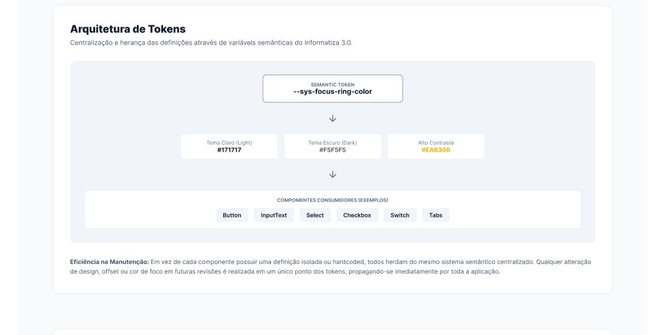
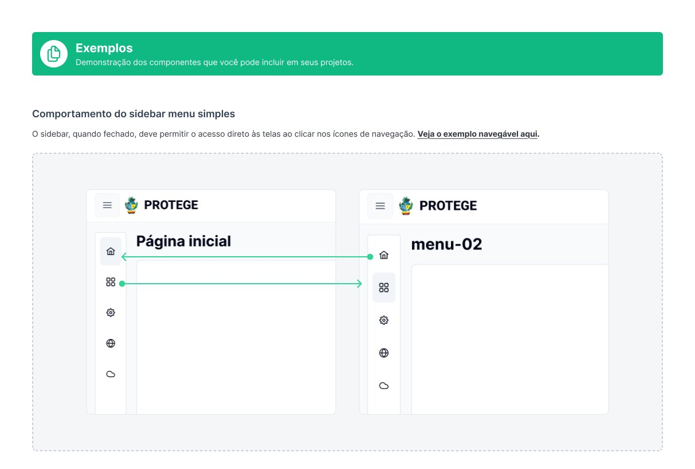
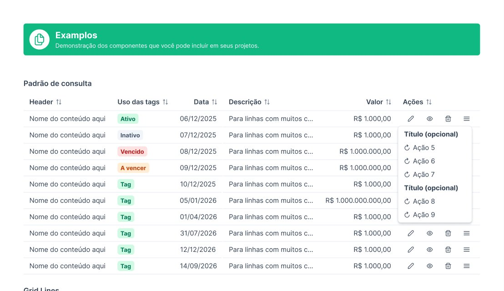
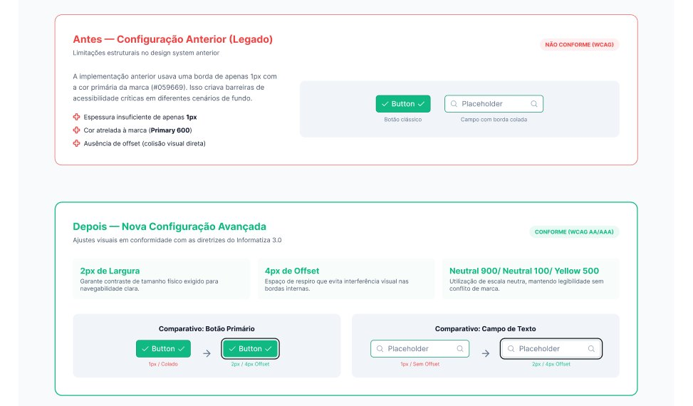

Governo de Goiás · 2024 – atual
Como padrões dispersos viraram uma linguagem compartilhada entre design e desenvolvimento para os produtos digitais do Estado.
01 — Visão geral
O Informatiza é o sistema de design que organiza e orienta a construção dos produtos digitais internos do Governo de Goiás.
Ele nasceu de um cenário fragmentado: cada sistema tinha cores, botões, tabelas e comportamentos próprios. Alguns componentes já existiam no desenvolvimento, principalmente a partir do PrimeNG, mas não havia documentação consolidada nem uma linguagem comum entre designers e desenvolvedores.
Minha atuação começou pela organização desse legado e evoluiu para a criação de uma nova infraestrutura de design, capaz de apoiar diferentes produtos, equipes e tecnologias.
02 — Desafio
O problema ia além da inconsistência visual. As telas eram desenhadas de um jeito e implementadas de outro, componentes eram recriados a cada projeto e cada equipe tomava decisões isoladas.
Parte dos sistemas não podia ser modernizada de imediato. Era preciso preservar uma base funcional para os produtos legados e, ao mesmo tempo, criar uma linguagem atual para os novos.
O desafio era construir uma transição possível: organizar o que existia, aproximar design e desenvolvimento e preparar o ecossistema para evoluir sem interromper serviços em funcionamento.
03 — Meu papel
Reuni arquivos e referências espalhados por diferentes produtos, identifiquei padrões recorrentes e organizei os componentes que deram origem ao Informatiza 2.0 — cores, botões, inputs, tabelas e estruturas de tela, numa lógica de design atômico, além de padrões para jornadas como login, edição de usuários e atendimento de chamados.
Ao perceber os limites dessa base, propus uma nova geração. Pesquisei versões mais recentes do PrimeNG, adaptei seus elementos à identidade e às necessidades do Governo de Goiás e construí os componentes iniciais do Informatiza 3.0.
Depois, cuidei da distribuição das bibliotecas, da disseminação dos padrões e da articulação da proposta com equipes técnicas, gerências e áreas estratégicas.

04 — Contribuições


05 — Em detalhe
Os três temas — claro, escuro e alto contraste — usam os mesmos tokens. O indicador de foco, essencial para quem navega pelo teclado, mostra como isso muda os detalhes.

06 — O primeiro teste
O AssinaGO foi o primeiro grande produto usado para demonstrar o avanço do Informatiza 3.0. Ele foi concebido nos padrões do Informatiza 2.0 e depois reconstruído com a nova linguagem — e a comparação lado a lado tornou visível para a gestão a diferença entre manter o legado e investir em uma base atualizada. Foi isso que garantiu o aval para seguir com o novo sistema.
O produto também cresceu. O que começou como uma ferramenta de assinatura virou um hub para enviar e gerenciar arquivos, configurar parâmetros, convidar participantes e organizar fluxos de assinatura com pessoas de dentro e de fora do governo — servidores, fornecedores e terceirizados, autenticados por ID Goiás, certificado digital ou gov.br.
Minha contribuição foi além das interfaces: participei da ampliação da visão do produto, ajudando a transformar um assinador em uma solução de gestão de documentos e assinaturas.
07 — Expansão
O Informatiza 3.0 despertou o interesse de outras áreas que também precisavam modernizar seus produtos. Daí surgiu o Informatiza 3.1, que leva os mesmos princípios para outro ambiente tecnológico e passou a apoiar produtos de grande escala, como o SISLOG — Portal de Compras do Estado de Goiás — e o GOMAP, sistema de monitoramento de projetos governamentais.
No GOMAP, fui o único designer dedicado e conduzi o processo de ponta a ponta: descoberta com Double Diamond, entrevistas com usuários e stakeholders, desenho da experiência, interfaces, validação com o desenvolvimento e acompanhamento dos testes. A solução ampliou a visão gerencial sobre escopo, partes interessadas, orçamento, prazos, riscos e etapas de execução.
Quando surgiu a chance de migrar o GOMAP para a nova base, o projeto já estava avançado. Decidimos concluí-lo na tecnologia existente e reservar a mudança para produtos futuros — uma diretriz que levo comigo: inovação precisa considerar maturidade, custo, risco e continuidade da entrega.
08 — Resultados
O principal resultado foi cultural: o design deixou de atuar só na produção de telas e passou a contribuir desde a compreensão do problema até a validação da solução.